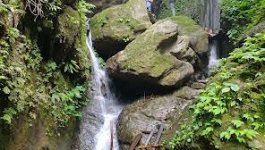

Shaktikhor is a village development committee in Chitwan District in the Narayani Zone of southern Nepal. At the time of the 2011 Nepal census, it had a population of 11,470 people living in 944 individual households.The drive starts early in the morning, passing through streams and rivers. You will be passing through green courtyards seeing the beauty of Nepal. After crossing the hills you will reach Terai region leaving the Hilly region. After reaching a city named Tandi you will be changing your bus and be driving to a town named Shaktikhor. You will be staying overnight in the beautiful town of Shaktikhor with a river flowing beside. You can also see the views of the high hills.
